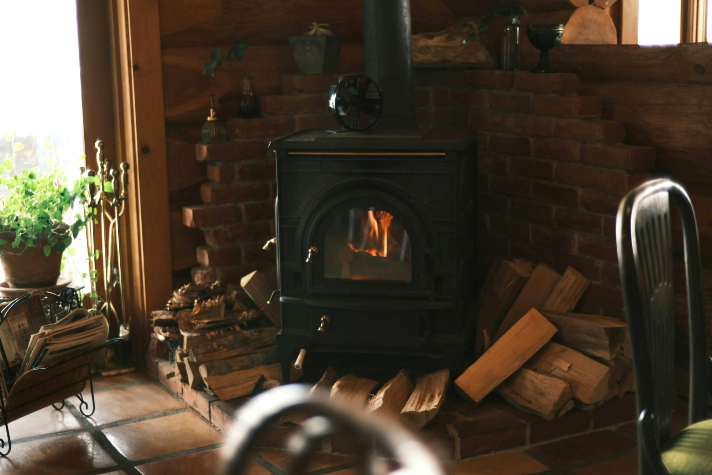
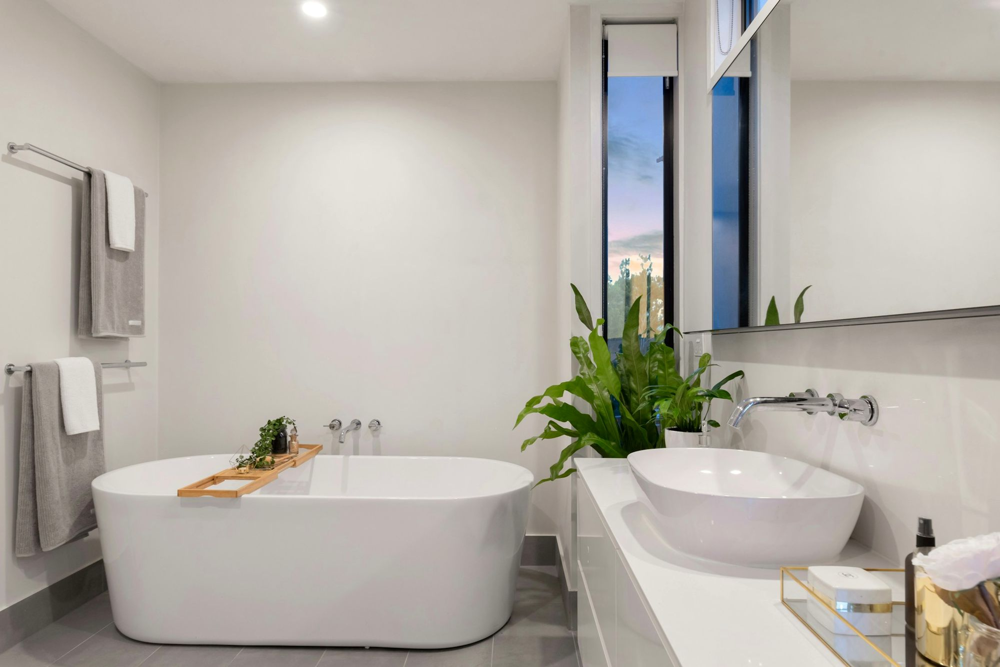

Chauffage, eau chaude, air : tout le confort de la maison.
Machado Fils installe chaudières, pompes à chaleur, poêles, climatisation et salles de bain, dans toute l'Auvergne.

Nos familles de travaux
Quatre domaines, du chauffage à la salle de bain, pour une maison ou un bâtiment tertiaire.
 →
→Chauffage
Chaudières gaz à condensation, chaudières à granulés ou à bois, plancher chauffant, radiateurs eau chaude.
 →
→Énergies renouvelables
Pompes à chaleur air/eau, poêles à granulés, chauffe-eau solaire ou thermodynamique.

→Salle de bain et plomberie
Salle de bain clé en main, sanitaires, installations de plomberie.
 →
→Installations techniques
Pompe à chaleur air/air, climatisation, VMC simple flux, double flux ou hygroréglable.
Du chauffage aux énergies renouvelables.
- 01Chaudières gaz à condensationinstallation
- 02Chaudières à granulés ou à boisénergies renouvelables
- 03Pompes à chaleur air/eauchauffage et eau chaude
- 04Plancher chauffant, radiateursémission de chaleur
- 05Chauffe-eau solaire, thermodynamiqueeau chaude

Des mains, des tuyaux, des outils.
Photos libres de droits de professionnels au travail : elles ne montrent pas l'équipe de Machado Fils.


Un équipement entretenu dure plus longtemps.
Avec son partenaire MR Maintenance, Machado Fils fait entretenir les équipements de chauffage et de rafraîchissement.
Une urgence de plomberie ?
Le partenaire Prunet Dépannage intervient pour les petits comme pour les grands dépannages.
Questions fréquentes
Quels types de chaudières installez-vous ?
Chaudières gaz à condensation, chaudières à granulés et chaudières à bois.
Installez-vous des pompes à chaleur ?
Oui : pompes à chaleur air/eau pour le chauffage, et pompes à chaleur air/air pour la climatisation.
Qui s'occupe de l'entretien de mes équipements ?
Machado Fils s'appuie sur son partenaire MR Maintenance pour l'entretien des équipements de chauffage et de rafraîchissement.
Et en cas d'urgence en plomberie ?
Le partenaire Prunet Dépannage assure les dépannages, petits ou grands.
Faites-vous les salles de bain complètes ?
Oui, la salle de bain clé en main fait partie des prestations.
Intervenez-vous pour les entreprises ?
Oui, Machado Fils réalise aussi des chantiers tertiaires : chauffage, plomberie, menuiserie et terrassement.